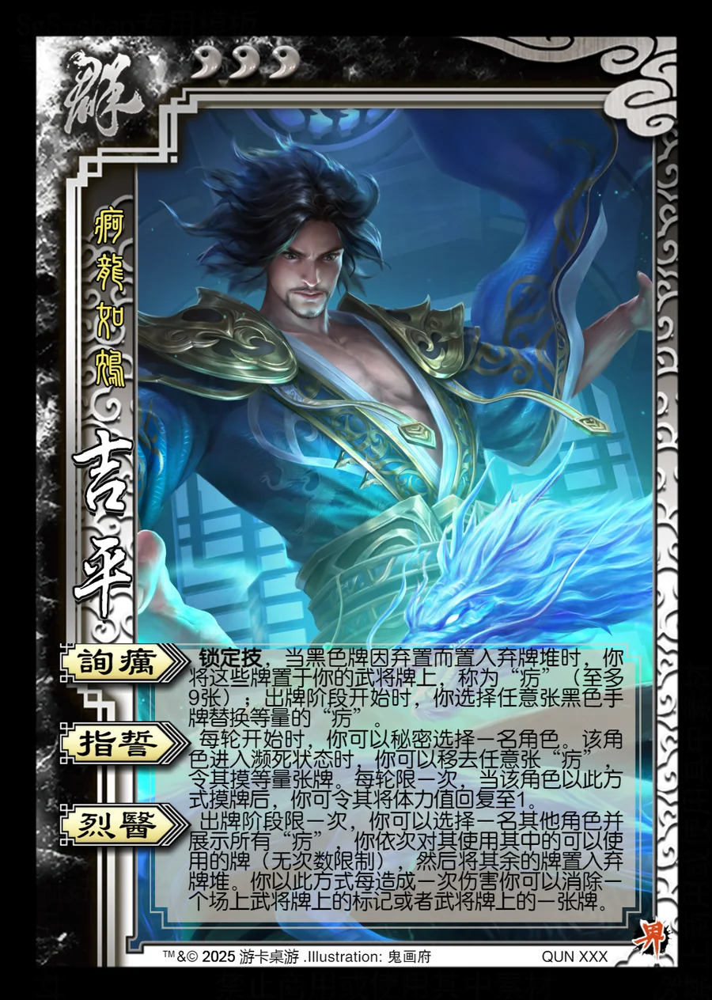

点击卡面查看大图
群
界吉平
♥3疴龙如鸩
询疠锁定技
锁定技，当黑色牌因弃置而置入弃牌堆时，你将这些牌置于你的武将牌上，称为“疠”（至多9张）；出牌阶段开始时，你选择任意张黑色手牌替换等量的“疠”。
指誓
每轮开始时，你可以秘密选择一名角色。该角色进入濒死状态时，你可以移去任意张“疠”，令其摸等量张牌。每轮限一次，当该角色以此方式摸牌后，你可令其将体力值回复至1。
烈医
出牌阶段限一次，你可以选择一名其他角色并展示所有“疠”，你依次对其使用其中的可以使用的牌（无次数限制），然后将其余的牌置入弃牌堆。你以此方式每造成一次伤害你可以消除一个场上武将牌上的标记或者武将牌上的一张牌。